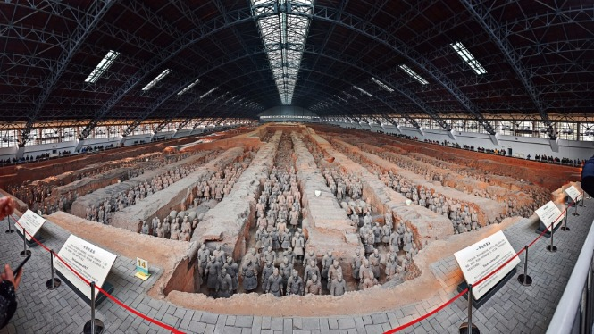
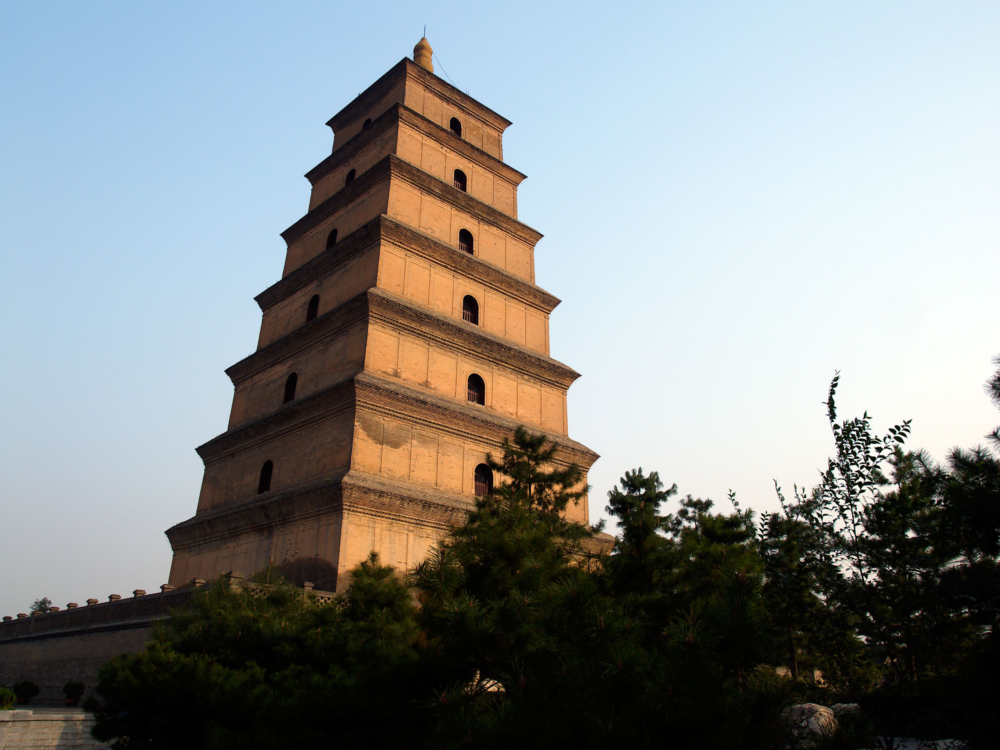

Top 3 Historic Sites in Xi'an
Terracotta Army Museum (Qin Shi Huang Mausoleum Museum)

Introduction
The Terracotta Army Museum, 35 kilometers east of Xi’an, is one of the world’s most famous archaeological sites—discovered in 1974, it’s a collection of 8,000+ life-sized terracotta warriors, horses, and chariots built to guard Qin Shi Huang (China’s first emperor) in the afterlife. The museum has three main pits: Pit 1 (the largest, with 6,000+ warriors arranged in battle formation), Pit 2 (with cavalry, archers, and chariots), and Pit 3 (believed to be the command center, with fewer warriors). The warriors are unique—each has a distinct face, hairstyle, and armor, reflecting the diversity of Qin Dynasty soldiers. The museum also includes the Qin Shi Huang Mausoleum (the emperor’s tomb, still unexcavated) and an exhibition hall with ancient bronze weapons and tools. It’s a must-visit for anyone interested in ancient Chinese history.
Best Time to Visit
Autumn (September–November): Dry, cool weather (15°C–25°C); fewer crowds than summer.
Morning (8:30 AM–11:00 AM): Warriors are lit by natural light; guides are more available.
Price
Entry Fee: 120 CNY/adult (peak season: March–November); 80 CNY/adult (off-season: December–February); free for kids under 1.2m.
Audio Guide: 30 CNY/rental (available in 10+ languages, including English).
Special Exhibition Hall (Bronze Chariots): Included in the entry fee.
Giant Wild Goose Pagoda (Dayan Pagoda)

Introduction
The Giant Wild Goose Pagoda, in southern Xi’an, is a 64.5-meter-tall brick pagoda built in the Tang Dynasty (652 AD) to house Buddhist scriptures brought back from India by the monk Xuanzang. It’s one of Xi’an’s most iconic landmarks and a UNESCO World Heritage Site. The pagoda has seven stories, with a spiral staircase inside that leads to viewing platforms (offering views of Xi’an’s skyline and Qujiang Pool Park). Surrounding the pagoda is Cien Temple (the original Tang Dynasty temple, with ancient halls and gardens) and North Square (home to one of Asia’s largest musical fountains—shows run at 12:00 PM, 16:00 PM, and 20:00 PM). The pagoda’s simple, elegant architecture and rich Buddhist history make it a beloved historic site.
Best Time to Visit
Evening (7:00 PM–8:30 PM): Pagoda is lit up; musical fountain show in North Square.
Spring (April–May): Cherry blossoms bloom in Cien Temple’s garden.
Price
Entry Fee (Pagoda + Cien Temple): 50 CNY/adult; 25 CNY/students; free for kids under 1.2m.
Staircase to Viewing Platforms: 30 CNY/adult (extra fee to climb the pagoda).
Musical Fountain Show: Free (arrive 30 minutes early for a good spot).
Xi’an City Wall

Introduction
The Xi’an City Wall, surrounding Xi’an’s downtown, is the best-preserved ancient city wall in China—built during the Ming Dynasty (1370–1378 AD), it’s 13.7 kilometers long, 12 meters high, and 15–18 meters wide. The wall has four main gates (East, West, South, North) and 98 watchtowers, each with a unique design. The best way to experience it is by renting a bike (45 CNY/1.5 hours) and cycling the entire loop—you’ll pass ancient watchtowers, see downtown Xi’an’s skyline from above, and stop at gates to take photos. For a slower pace, you can walk along the wall (free for pedestrians at some sections) or join a sunset tour (60 CNY/person) to watch the sun set over the city. The wall is a living link to Xi’an’s ancient past, blending history with modern city life.
Best Time to Visit
Sunset (5:30 PM–7:00 PM): Warm light on the wall; fewer cyclists than daytime.
Autumn (October–November): Cool breeze; clear views of the city.
Price
Entry Fee (Cycling or Walking): 54 CNY/adult; 27 CNY/students; free for kids under 1.2m.
Bike Rental: 45 CNY/1.5 hours; 90 CNY/3 hours (includes a helmet and lock).
Sunset Tour (With Guide): 60 CNY/person (includes entry fee and historical commentary).